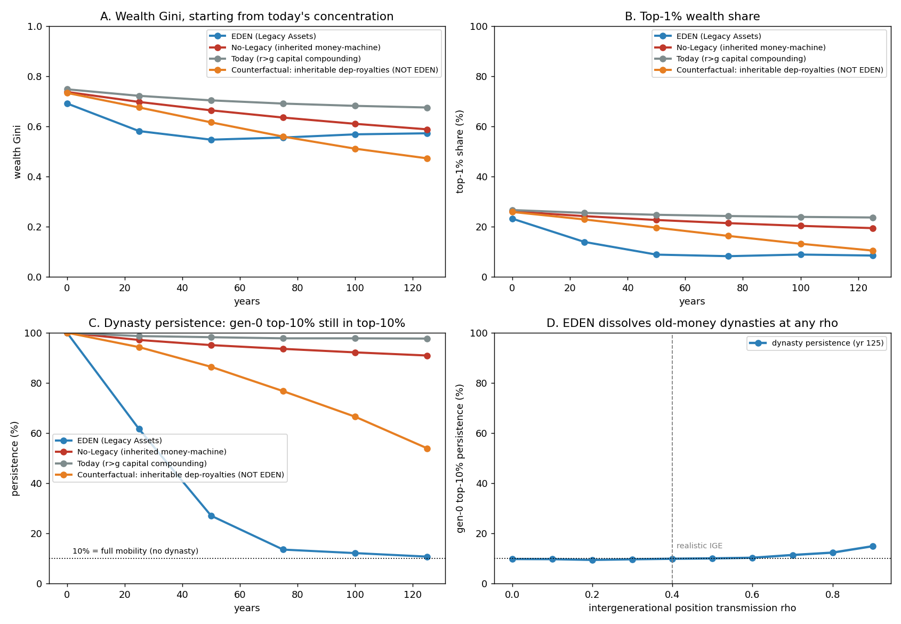
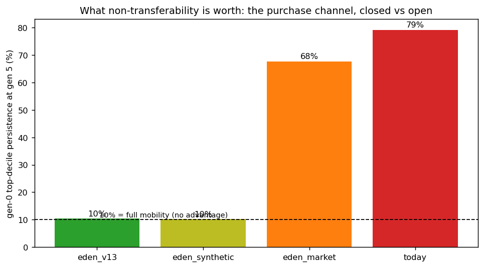

In plain language
Companion to RESULTS - Multi-Generational Wealth. Companion added July 11, 2026 — the v1–v5-era runs predate the plain-language convention; written from the committed RESULTS as it stands today (including any verification-pass corrections already applied in that file), with no reinterpretation.
The question
Over ~125 years and six generations, does EDEN prevent dynastic wealth concentration, or does it re-emerge through inherited cash and inherited position? The engine of dynasty isn't high income — it's an inheritable capital stock that earns a return and reinvests it (Piketty's r > g). EDEN's claim is that it removes the engine: minting requires your own live attention, so a money-machine can be neither inherited nor bought.
What we found
Starting every regime from today's already-concentrated wealth: under EDEN the wealth Gini erodes 0.69 → 0.57, the top-1% share falls 23% → 8%, and — the headline — the original elite loses its grip almost entirely: only 11% of the generation-zero top-10% families are still on top after 125 years, where 10% would be full mobility. The compounding regimes do the opposite: today's r > g world keeps 98% of the original elite in place, and a counterfactual with inheritable minting assets keeps 91%. A further counterfactual in which a dead owner's dependency royalties stay inheritable (explicitly not EDEN) re-forms partial dynasties at 54% persistence even while headline inequality looks benign — which is what the Legacy mechanic prevents. Even at very strong human-capital transmission (rho = 0.9), EDEN's persistence stays near full mobility (10% → 15%). What is still inherited — spendable cash (about half the wallet passes on) and position — doesn't compound. And routing dead owners' orphaned dependency slices to the floor turns, per the companion Network & Dependency Graph sim, ~82% of that royalty pool into an ancestral dividend, cutting its top-10% private capture from ~79% to ~17%.
The corrections — two layers, both carried here
June 2026: an earlier version of this writeup called the inheritable-dependency-royalty regime a "loophole" in EDEN and recommended Legacy "must zero out dependency royalties." That framing was wrong: in EDEN a Legacy asset stops generating EVE entirely at the owner's death — direct and via dependency routing — so that regime is a counterfactual showing what Legacy prevents, not a gap EDEN has. July 2026 verification (reframe): the code contains no dependency graph, death event, or royalty routing — "Legacy stops all earning" enters as the single scalar R=0 — so this sim cannot itself adjudicate whether Legacy blocks dependency royalties. The accurate history: this run surfaced a genuine spec ambiguity (v1.0/v1.1 never said what happens to a dead owner's dependency stream), and spec v1.2 closed it after this run (orphaned dependency-shares route to the floor), tagged as new; the INDEX's earlier "that framing was wrong" phrasing had overwritten that middle step.
The honest catch
The regime scalars favor EDEN in un-modeled ways: the inherited-cash decay (0.5 per generation) has no mechanism behind it, and EDEN's bequest friction is 0.5 against rivals' 0.85. Living heirs buying live income-producing assets is an unmodeled dynastic channel that no canon rule currently prohibits — flagged as an open design question in the July 2026 verification. Add the usual stylization (one child per lineage, constant population, reduced-form capital engines), and the honest reading is: the qualitative ordering — compounding regimes lock in dynasties, EDEN's non-compounding inheritance doesn't — is robust; the precise "11% ≈ full mobility" number is not.
One line
Because nothing in EDEN compounds across death, the simulated old-money elite dissolves (persistence 100% → 11%) while compounding-capital worlds keep theirs (91–98%) — an ordering that is robust even though the exact numbers lean on EDEN-friendly scalars, the dependency-royalty answer lives in spec v1.2 rather than in this code, and heirs buying live assets remains an open design question.
Words used here (added July 18, 2026 — plain-language house rule; the text above is unchanged). Gini — a 0-to-1 lopsidedness score for wealth: 0 means everyone equal, 1 means one family owns everything. Top-1% share — the slice of all wealth held by the richest 1%. Persistence — the share of the original top-10% families still on top generations later: 10% would mean the elite churns completely (full mobility), 100% a frozen aristocracy. r > g (Piketty) — returns on wealth outrun economic growth, so old fortunes compound faster than new work can catch up — the engine of dynasty this design removes. Counterfactual — a deliberately altered what-if world run for comparison, not a claim about EDEN. Dependency royalties — the slice of an asset's earnings routed to the earlier works it was built on; the contested question is what happens to that stream when the upstream owner dies. rho (ρ) = 0.9 — how sticky parent-to-child transmission of advantage is: each generation keeps 0.9 of the last one's edge plus fresh luck. Scalar — a single plain number standing in for a whole mechanism (Legacy enters this code only as "R=0"), which is why this run can't adjudicate the mechanism's fine print. Reduced-form — deliberately simplified to only the parts that matter for this question; the capital engines are sketches, not machinery. Bequest friction — how much of a fortune is lost in the handover at death; EDEN's 0.5 versus rivals' 0.85 is one of the EDEN-friendly dials.
(Dated note, July 18, 2026: the closing caveat above — "living heirs buying live income-producing assets is an unmodeled dynastic channel that no canon rule currently prohibits" — is no longer open. It became the corporate-wrapper cell (EVE Sim v35, July 12: naive corporate ownership rebuilds dynasties at 77.1% vs this run's ~10% mobility line) and was closed in ratified canon the same week: DR-18 (corporations are coordinators, never owners; fixed commercial term; shells counted together) and DR-19 (register-to-own, registrations are title deeds), both ratified July 18. The enforcement layer was tested in EVE Sim v36.)
Figures


Technical results
Closes the long-run equity item the Modeling Roadmap left open and the Red-Team flagged (#9): over ~125 years and several generations, does EDEN prevent dynastic concentration, or does it re-emerge through inherited cash and inherited position even though Legacy Assets stop a dead person's assets from minting? Files in this folder.
⚠️ REFRAME (July 2026 verification) — what the "Correction (June 2026)" actually was
For the record: the code below contains no dependency graph, death event, or royalty routing — "Legacy stops all earning" enters as the scalar R=0, so this sim cannot adjudicate whether Legacy blocks dependency royalties. The accurate history: this run surfaced a genuine spec ambiguity (v1.0/v1.1 never said what happens to a dead owner's dependency stream); spec v1.2 closed it (orphaned dependency-shares route to the floor), tagged as new, after this run; under the closed spec the 54%-persistence regime is fairly read as a counterfactual. The INDEX's earlier "that framing was wrong" phrasing overwrote that middle step; this note restores it. Also for honesty: the regime scalars favor EDEN in un-modeled ways (inherited-cash decay D=0.5/generation has no mechanism behind it; bequest friction 0.5 vs rivals' 0.85), and living heirs buying live income-producing assets is an unmodeled dynastic channel that no canon rule currently prohibits — flagged as an open design question in the July 2026 verification. The qualitative ordering (compounding regimes lock in dynasties; EDEN's non-compounding inheritance doesn't) is robust to all of this; the precise "11% ~ full mobility" number is not.
Correction (June 2026). An earlier version of this writeup described a dependency-royalty "loophole" in EDEN and recommended that Legacy "must zero out dependency royalties." That framing was wrong and is corrected here. In EDEN, a Legacy asset stops generating EVE entirely at the owner's death — direct and via dependency routing. The "Legacy" is a permanent contribution score of accumulated human time/impact (the gamified record of what a person's work meant to society), not an income stream. So there is no asset that "keeps generating EVE forever," and no inherited earning machine. The fourth regime in this run is therefore a counterfactual — "what would happen if dependency royalties were inheritable" — included to show what the Legacy mechanic prevents, not a gap EDEN has.
The framing
The engine of dynastic wealth is not high income — it's an inheritable capital stock that earns a return and reinvests it (Piketty's r > g). EDEN's claim is that it removes the engine: minting requires your live human attention, so a money-machine can be neither inherited nor bought. The honest test: start every regime from today's already-concentrated wealth and watch six generations. Two questions — inequality (does the Gini / top-1% share stay high or erode?) and dynasty (do the same families stay on top?).
Four regimes, identical labor + position transmission (rho), differing only in the capital engine: EDEN (no money-machine, R=0), No-Legacy (inherited minting assets — a counterfactual money-machine), Today (financial capital, ~4%/yr real, compounding), and a counterfactual in which a dead owner's dependency royalties are inheritable (also not EDEN — shown to isolate that one channel).
The result
| Regime | Wealth Gini (yr 0→125) | Top-1% share (0→125) | Dynasty persistence (gen-0 top-10% still on top, 0→125) |
|---|---|---|---|
| EDEN (Legacy Assets) | 0.69 → 0.57 | 23% → 8% | 100% → 11% |
| No-Legacy (counterfactual money-machine) | 0.74 → 0.59 | 26% → 19% | 100% → 91% |
| Today (r > g capital compounding) | 0.75 → 0.67 | 27% → 24% | 100% → 98% |
| Counterfactual: inheritable dep-royalties (NOT EDEN) | 0.73 → 0.47 | 26% → 10% | 100% → 54% |
(10% persistence = full mobility / no dynasty; 100% = the original elite never loses its place.)
-
EDEN dissolves dynasties — the headline. From today's concentration, EDEN's wealth Gini and top-1% share erode toward the income-driven level, and the gen-0 wealth elite loses its grip almost entirely (persistence 100% → 11%, ≈ full mobility). The compounding-capital regimes do the opposite, keeping the same families on top (Today 98%, No-Legacy 91%). The decisive variable is the capital engine, not the income distribution — exactly EDEN's claim, demonstrated over the horizon that actually tests it.
-
The residual EDEN inequality is bounded and meritocratic, not dynastic. Wealth still varies with earning position and savings, but it doesn't compound or lock in: even at very strong human-capital transmission (
rho = 0.9), the gen-0 elite's persistence stays near full mobility (10% → 15%). Old money dissolves regardless of how heritable talent is. -
The counterfactual shows why the Legacy mechanic matters. If a dead owner's dependency royalties were inheritable (they are not), partial dynasties re-form (persistence 54%) even while headline inequality looks benign (top-1% ~10%). That's why it's important that Legacy zeroes all earning at death — direct and dependency — and the run confirms the mechanism is doing real work.
What's actually inherited in EDEN — and why it's safe
Two channels remain, and the sim shows both are harmless:
- Cash (the bequeathed wallet balance, ~50%). EVE earns no yield, so inherited cash is spendable, non-compounding, and depletes — a modest head-start that washes out within a generation or two. It cannot be turned into a money-machine, because minting needs the heir's own live attention.
- Position (human capital, network, reputation). Heritable in practice, but bounded and non-compounding (the
rhoresult). It produces meritocratic persistence, not a dynasty.
The genuine design decision this surfaced (the real point)
It is not "stop paying dead people's heirs" — Legacy already does that. The real, previously-unspecified question is narrower: when a living asset mints and one of its dependencies is now a Legacy (dead-owned) asset, what happens to that dead dependency's 10% slice of the live asset's mint? That slice is "orphaned." Three options, and the choice matters:
- Not minted — the live asset's total mint shrinks (simplest; mildly deflationary as foundational work ages into Legacy).
- Redistributed to the living stack — rejected: it would reward downstream creators for an upstream owner's death (a perverse incentive to see dependency owners gone).
- Routed to the floor / commons — chosen: a broadly-shared "ancestral dividend" that funds the safety net.
The companion Network & Dependency Graph sim quantifies why routing-to-floor is the healthiest choice: because the oldest, most-depended-on assets are exactly the ones whose owners have died, ~82% of the dependency-royalty pool becomes an ancestral dividend to the floor, and the top-10% private capture of that pool falls from ~79% (if heirs collected) to ~17%. Humanity's accumulated foundational work ends up funding everyone's floor rather than a handful of lineages.
The precise claim to make
Capital dynasties dissolve — the same families do not stay on top, because nothing compounds across death. Position advantage persists, but it is bounded by the floor and does not compound. Inherited cash is a non-compounding head-start that washes out. And the dependency value of foundational work, once its creators pass, becomes an ancestral dividend that funds the floor.
Honest limits
A stylized generational model (one child per lineage, constant population, 25-year generations). Earning position is lognormal and transmits by a single AR(1) elasticity; the capital engines are reduced to a per-generation return/depreciation/bequest — illustrative, not estimated. "Today" stands in for r > g dynamics, not a calibrated U.S. wealth model. Real inheritance is messier (assortative mating, family size, taxes, in-vivo transfers). The robust, calibration-independent takeaways are the shapes and ordering: EDEN's persistence collapses toward full mobility while compounding-capital regimes lock in; cash and position don't create dynasties; and a surviving dependency stream would (which Legacy precludes). Audience: anyone evaluating EDEN's core equity claim, and whoever finalizes the orphaned-dependency-share rule in the spec.
Files
multigen_wealth_sim.py— the generational model, the four capital engines, dynasty-persistence tracking, and therhosweepfig_multigen_wealth.png— Gini, top-1% share, dynasty persistence over 125 years, and EDEN persistence vsrhoresults_multigen_wealth.json— all series and readouts
Raw data
⬇ results_multigen_wealth.json⬇ results_purchase_channel.json